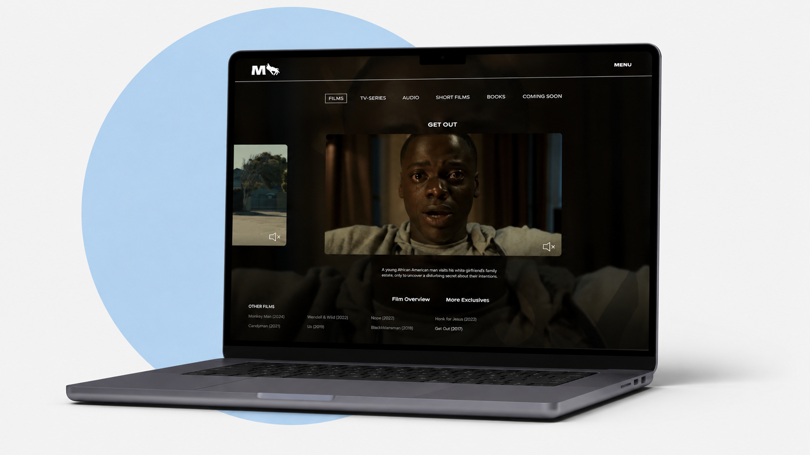
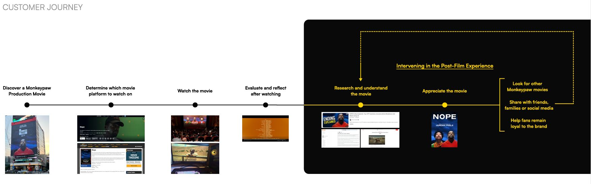
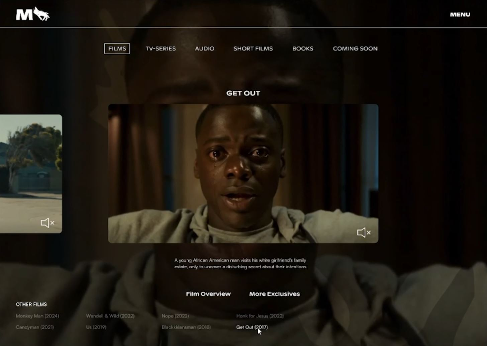
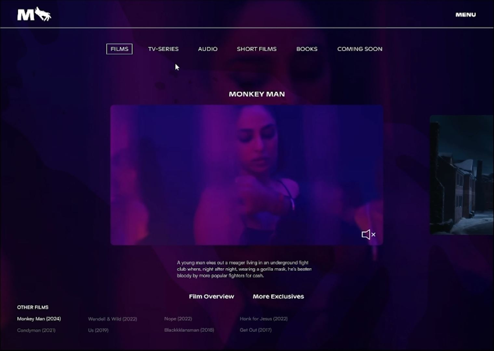
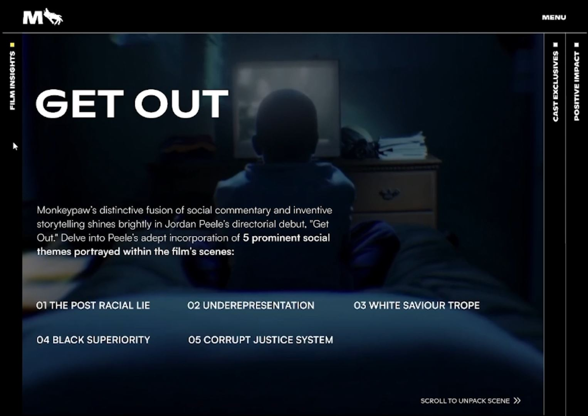
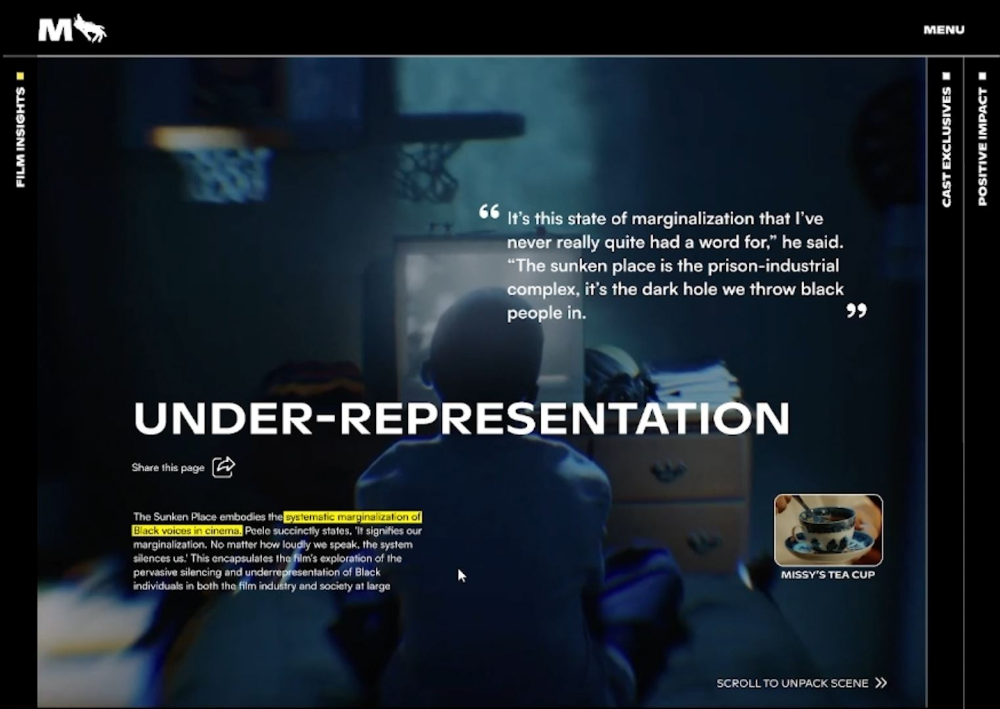
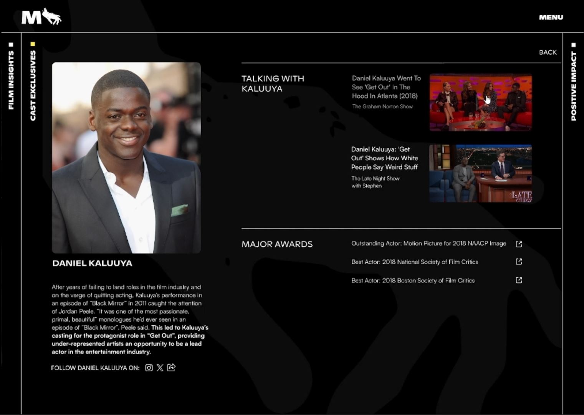
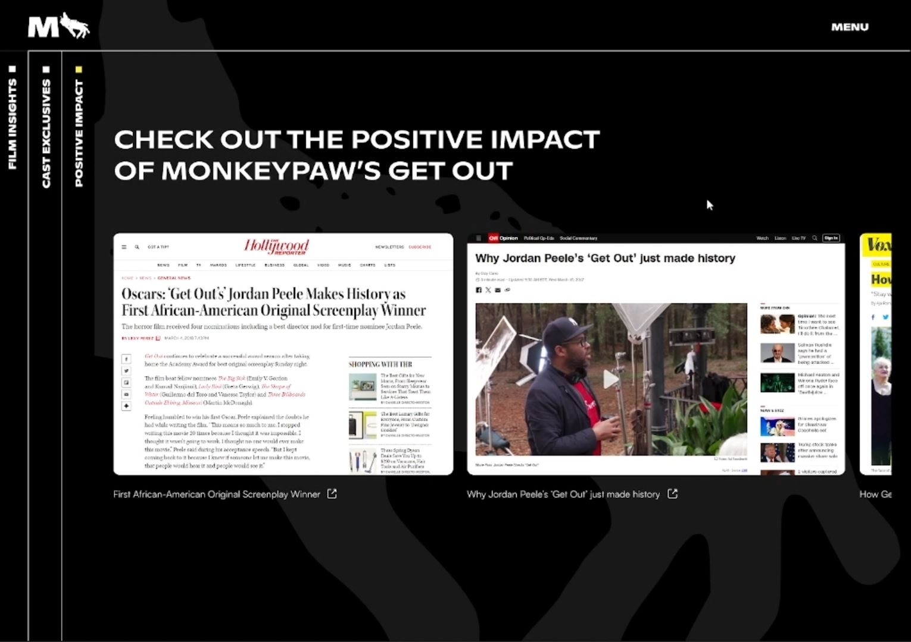
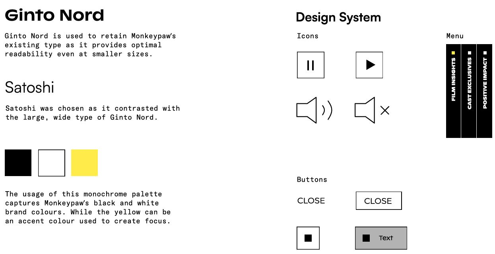

Hello, I'm
Jack Luo
UI/UX Designer


UX Strategy • Website Redesign • Digital Brand Experience
Enhancing the post-film experience through a desktop website redesign that helps fans explore film themes, director insights, cast stories, and cultural impact.

Project Overview
Monkeypaw Productions is known for creating films that use horror, science fiction, and social satire to explore complex social themes. For this senior-level UX design project, our team redesigned part of Monkeypaw’s digital experience to help fans continue engaging with a film after watching it.
Our concept focused on improving the post-film experience through a redesigned desktop website that centralizes official content, highlights social themes, showcases cast and director insights, and encourages fans to further explore Monkeypaw’s cinematic world.
Final Prototype Video
This final prototype video demonstrates our redesigned Monkeypaw Productions experience, showing how users move from the production landing page into film-specific content, social theme analysis, cast recognition, and additional film discovery.
The Challenge
Monkeypaw films often spark discussion because of their layered symbolism, social commentary, and unconventional storytelling. However, after watching a film, many fans turn to Reddit, YouTube, or external articles to better understand the film’s meaning.
Our challenge was to design a digital experience that would help fans understand, appreciate, and continue engaging with Monkeypaw films while staying within the official brand ecosystem.
Problem Statement
How might we encourage fans to engage with Monkeypaw’s official website, enabling them to develop a deeper understanding of the film’s social themes in order to reinforce Monkeypaw’s brand values and deepen fans’ appreciation of the film?
Understanding the Brand
We wanted the website to feel purposeful and connected to Monkeypaw’s larger mission, rather than becoming a generic film information page.
Using storytelling to explore complex social issues and provoke discussion.
Extending audience conversations through meaningful digital touchpoints.
Highlighting diverse storytellers, actors, and perspectives in film.
YouTube analysis
Reddit discussions
Official content hub
Film-first exploration
Deeper appreciation
Stronger brand engagement

Research & Insights
Our research showed that fans often seek explanations after watching Monkeypaw films, especially when interpreting complex endings, symbolic scenes, or broader social commentary.
We identified YouTube and Reddit as major post-film touchpoints. This revealed an opportunity for Monkeypaw’s official website to become a more credible and centralized source for film meaning, director intent, cast stories, and cultural impact.
Design Process
Our process moved through research, framing, ideation, prototyping, user testing, and refinement.
Analyzed Monkeypaw’s current website, brand values, and fan behaviour.
Mapped the customer journey and identified the post-film stage.
Explored social theme pages, timelines, film breakdowns, and cast profiles.
Validated the initial prototype with Monkeypaw film viewers.
Shifted the experience toward a film-first, more immersive structure.
Early Concept
Our initial concept focused heavily on social justice themes and historical context. Users could choose a theme, such as racial injustice or dehumanization, and then view historical events connected to specific scenes from Monkeypaw films.
Although the concept had strong educational value, testing showed that it felt too separate from the actual films.
User Testing Findings
Final Solution
The final prototype enhances Monkeypaw’s post-film experience through structured content, cinematic visuals, and clearer pathways into deeper film exploration.

A cinematic entry point for browsing Monkeypaw productions and selecting a film.

Synopsis, release details, trailer content, and cast information for quick context.

Scene-based themes supported by quotes, annotations, and highlighted dialogue.

Official director-focused content that gives fans credible interpretation.

Actor roles, interviews, accomplishments, and career impact from the film.

Prompts fans to explore more Monkeypaw films and remain engaged on the website.
Visual Design Direction
The visual direction was inspired by Monkeypaw’s existing black-and-white cinematic identity. We maintained the dark, atmospheric feeling of the brand while making the content structure more purposeful and easier to navigate.
The interface uses large imagery, monochrome contrast, layered overlays, and selective yellow accents to draw attention to key quotes, evidence, and interpretation moments.

Design Decisions
A key design decision was to preserve Monkeypaw’s visual identity while improving content clarity. We used vertical navigation to divide different sections, creating an experience that feels similar to reading through chapters or a screenplay.
Clickable annotations, subtitles, and highlighted dialogue were included to help fans connect specific moments in the film to larger social themes.
Value Proposition
Reflection
This project taught me how UX design can support both user needs and brand strategy. At first, our team focused heavily on explaining social issues and historical context. Through testing, we learned that users wanted the film itself to remain at the center of the experience.
That feedback helped us shift from a content-heavy educational resource to a more immersive and brand-aligned website that connects film, theme, cast, and impact. This project strengthened my skills in UX research, content strategy, interaction design, visual storytelling, and prototyping.
Hello, I'm
UI/UX Designer